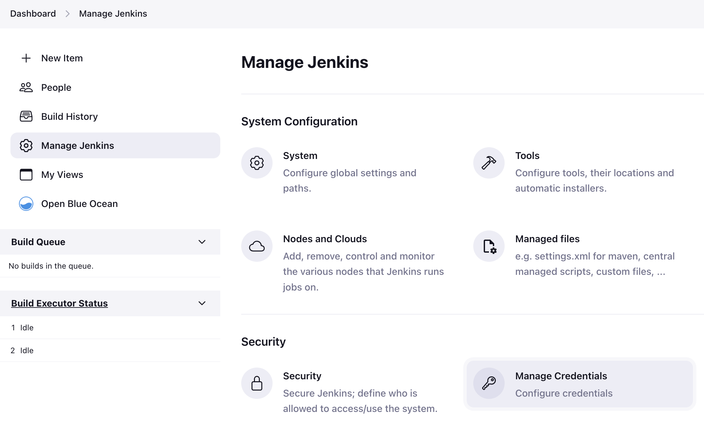
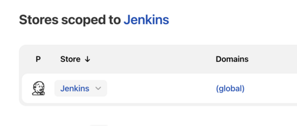
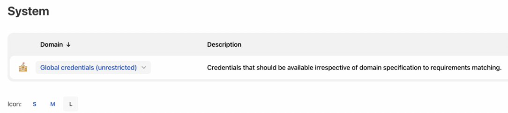

Using credentials
|
This site is the new docs site currently being tested. For the actual docs in use please go to https://www.jenkins.io/doc. |
There are numerous 3rd-party sites and applications that can interact with Jenkins, for example, artifact repositories, cloud-based storage systems and services, and so on.
A systems administrator of such an application can configure credentials in the application for dedicated use by Jenkins. This would typically be done to "lock down" areas of the application’s functionality available to Jenkins, usually by applying access controls to these credentials. Once a Jenkins manager (i.e. a Jenkins user who administers a Jenkins site) adds/configures these credentials in Jenkins, the credentials can be used by Pipeline projects to interact with these 3rd party applications.
Note: The Jenkins credentials functionality described on this and related pages is provided by the Credentials Binding plugin.
Credentials stored in Jenkins can be used:
-
anywhere applicable throughout Jenkins (i.e. global credentials), [#types-of-credentials]
-
by a specific Pipeline project/item (read more about this in the Handling credentials section of Using a Jenkinsfile),
-
by a specific Jenkins user (as is the case for Pipeline projects created in Blue Ocean).
Jenkins can store the following types of credentials:
-
Secret text - a token such as an API token (e.g. a GitHub personal access token),
-
Username and password - which could be handled as separate components or as a colon separated string in the format
username:password(read more about this in Handling credentials), -
Secret file - which is essentially secret content in a file,
-
SSH Username with private key - an SSH public/private key pair,
-
Certificate - a PKCS#12 certificate file and optional password, or
-
Docker Host Certificate Authentication credentials.
Credential security
To maximize security, credentials configured in Jenkins are stored in an encrypted form on the controller Jenkins instance (encrypted by the Jenkins instance ID) and are only handled in Pipeline projects via their credential IDs.
This minimizes the chances of exposing the actual credentials themselves to Jenkins users and hinders the ability to copy functional credentials from one Jenkins instance to another.
Configuring credentials
This section describes procedures for configuring credentials in Jenkins.
Credentials can be added to Jenkins by any Jenkins user who has the Credentials > Create permission (set through Matrix-based security). These permissions can be configured by a Jenkins user with the Administer permission. Read more about this in the Authorization section of Managing Security.
Otherwise, any Jenkins user can add and configure credentials if the Authorization settings of your Jenkins instance’s Security settings page is set to the default Logged-in users can do anything setting or Anyone can do anything setting.
Adding new global credentials
To add new global credentials to your Jenkins instance:
-
If required, ensure you are logged in to Jenkins (as a user with the Credentials > Create permission).
-
From the Jenkins home page (i.e. the Dashboard of the Jenkins classic UI), click Manage Jenkins > Manage Credentials.
Figure 1. Manage_credentials -
Under Stores scoped to Jenkins on the right, click on Jenkins.
Figure 2. Store_scoped -
Under System, click the Global credentials (unrestricted) link to access this default domain.
Figure 3. System_global_credentials -
Click Add Credentials on the left.
Note: If there are no credentials in this default domain, you could also click the add some credentials link (which is the same as clicking the Add Credentials link). -
From the Kind field, choose the type of credentials to add.
-
From the Scope field, choose either:
-
Global - if the credential/s to be added is/are for a Pipeline project/item. Choosing this option applies the scope of the credential/s to the Pipeline project/item "object" and all its descendant objects.
-
System - if the credential/s to be added is/are for the Jenkins instance itself to interact with system administration functions, such as email authentication, agent connection, etc. Choosing this option applies the scope of the credential/s to a single object only.
-
-
Add the credentials themselves into the appropriate fields for your chosen credential type:
-
Secret text - copy the secret text and paste it into the Secret field.
-
Username and password - specify the credential’s Username and Password in their respective fields.
-
Secret file - click the Choose file button next to the File field to select the secret file to upload to Jenkins.
-
SSH Username with private key - specify the credentials Username, Private Key and optional Passphrase into their respective fields.
Note: Choosing Enter directly allows you to copy the private key’s text and paste it into the resulting Key text box. -
Certificate - specify the Certificate and optional Password. Choosing Upload PKCS#12 certificate allows you to upload the certificate as a file via the resulting Upload certificate button.
-
Docker Host Certificate Authentication - copy and paste the appropriate details into the Client Key, Client Certificate and Server CA Certificate fields.
-
-
In the ID field, specify a meaningful credential ID value - for example,
jenkins-user-for-xyz-artifact-repository. The inbuilt (default) credentials provider can use uppercase or lowercase letters for the credential ID, as well as any valid separator character, other credential providers may apply further restrictions on allowed characters or lengths. However, for the benefit of all users on your Jenkins instance, it is best to use a single and consistent convention for specifying credential IDs.
Note: This field is optional. If you do not specify its value, Jenkins assigns a globally unique ID (GUID) value for the credential ID. Bear in mind that once a credential ID is set, it can no longer be changed. -
Specify an optional Description for the credential/s.
-
Click OK to save the credentials.